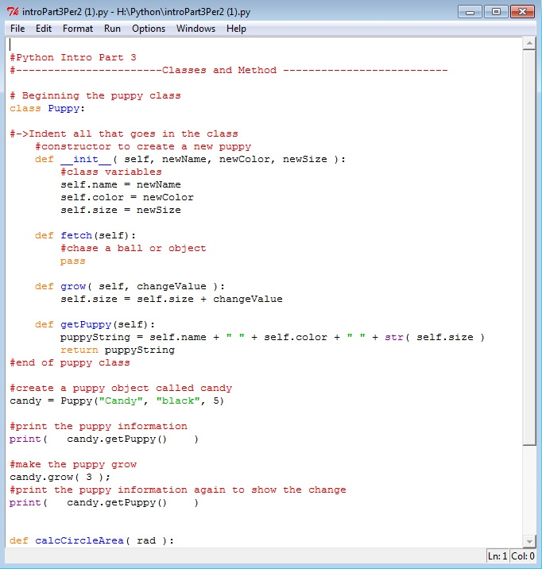
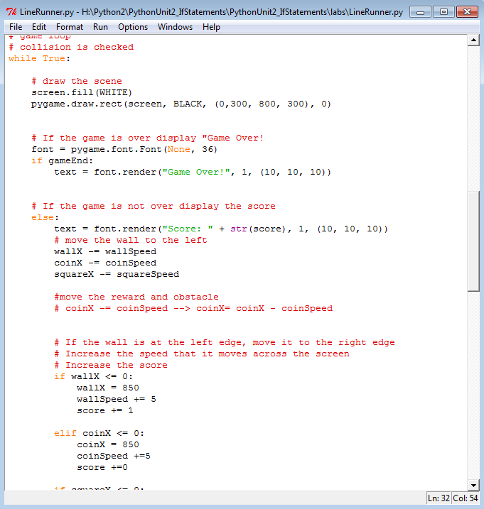
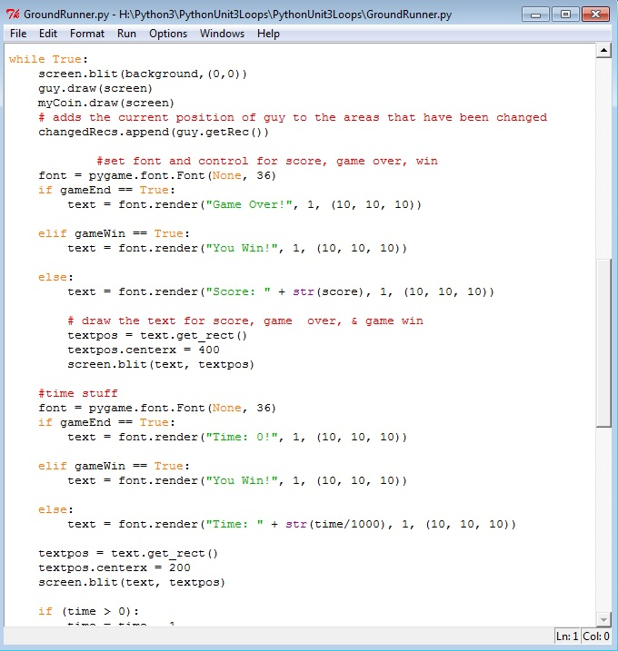
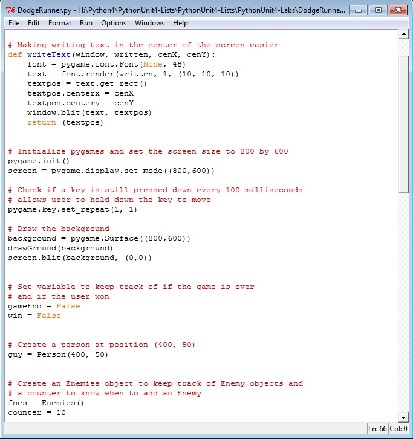
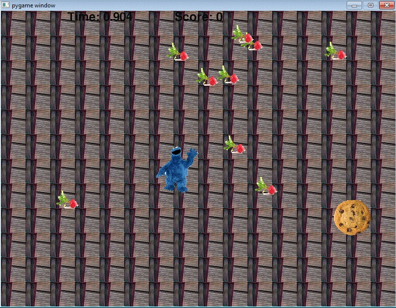

Python Content

Description:
In this project we mostly learned how to print statements. Such as printing your name, age, or hobbies. In this assignment when Python ran we had the user input their name, age, and GPA.
Concepts Learned:
During Python unit one we learned how to print statements as well as create code to find the different answers to numerical equations once you input numbers. We also learned to identify variables as well as set color, size, and name. In addition, we learned how to add to programs of coding to create a string.
Python Unit Two
Description:
In this lab we created a game in which the sprite had to avoid obstacles and catch the reward. The sprite needed to jump over the walls and catch the coins. If the sprite would have hit an obstacle the game would have been over.
Concepts Learned:
During Python unit two we learned how to use elif and else statements. Also how these statements allow you to run code only if a condition is met; hoowever it can skip the code if the condition is not met. We also learned how relational operators compare to values and return true or false depending on the coding used. We also learned that if-else statements allow you to execute different code if the statement is false.
Python Unit Three

Description:
I created a game where the person had to catch as many rewards as possible within a certain spam of time. The sprite needs to collect 15 coins within 10 seconds in order to win the game. If not then the player would have lost the game.
Concepts Learned:
In Python unit 3 we focused mainly on loops. We learned that loops are used to repeat code as long as a condition is met. Loops are used to run a set number of times. As a part of loops we learned about range. For example, for y in range(num):, this would repeat unitl y is no longer less than the number stated. Also, we learned how to stop a loop early using a keyword break. We also learned that loops can be put inside other loops. Also we learned frequently used methods such as: pygame.image.load(file), surface.blit(image,(x,y)), etc.
Python Unit Four

Description:
In this assignment we pieced together programming to create a game. The person needed to run across the grass while avoiding the enemies. Once you hit the enemies you would lose.
Concepts Learned:
In this unit we learned about lists. Lists allow you to use one identifier to group similar items together. We learned how to piece together lists using indices; which allows the index to indicate which value in the array is being accessed. Going along with lists we learned how to insert "x" into a specific region on a list as well as removing them. In addition, we worked on the append method which allows you to add data to the end of a list. Also how the insert method allows you to add data to the middle of a list. Next, we began to learn about tuples. Tuples occur when you named two different variables the same thing. Tuples are lists that cannot be changed; due to the fact that they cannot be changed they have no methods.
Python Final Project
Description:
For my final project I made a cookie monster game. In my game the cookie monster needs to try to catch all the cookies while avoiding all of the radishes. You need to get twenty-five cookies within ten seconds to win the game. Every time you get a cookie you add one point to you score, however when you get a radish your score is reduced by one.